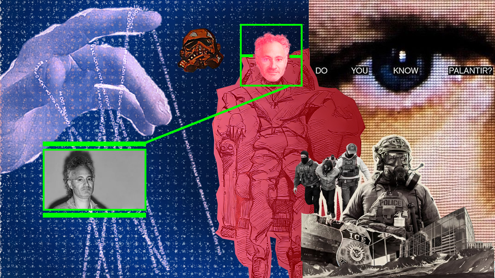
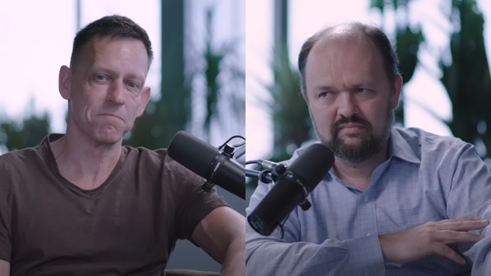
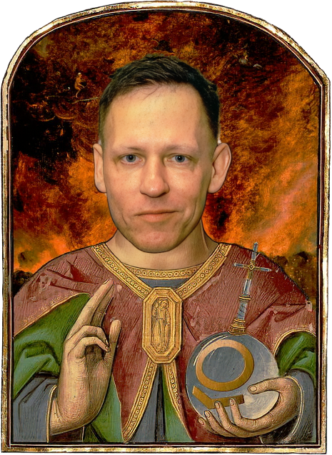
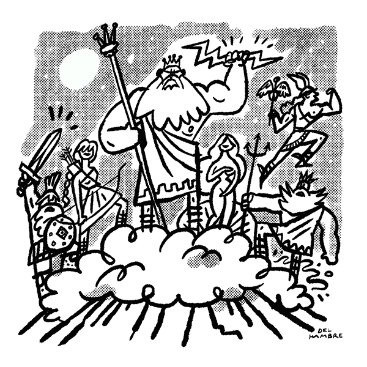

Moksh and I started the evening geeking out over web design. But when you start pulling the threads of modern technology, the wrapping unravels quickly. Here is how a conversation about website cursors turned into an existential breakdown of the human race.
A war room that looks like Dota

We landed on Palantir—the massive intelligence computation company holding contracts with the CIA and the military. Its CEO, Alex Karp, is a man who studied law and philosophy rather than pure tech, and he doesn't shy away from the fact that his company's software is used to target and kill people. The chilling part? The interface they use to wage war looks exactly like a game of Dota.
The degree of separation

This brings up a terrifying psychological reality. In Hitler's army, soldiers justified horrific acts with a straightforward, chilling rationale: we are just following orders. The famous Milgram experiment proved why this happens: if you force someone to watch another human receive a physical shock right in front of them, they will refuse to administer it. But if you add distance—a screen, a VR headset, a drone thousands of miles away—the “degree of separation” makes it terrifyingly easy to pull the trigger.

We are rationally bound creatures, and when the digital consequences feel low, our capacity for real-world evil skyrockets.
This same degree of separation allows trolls online to feel empowered and say vile shit.
Listening to Karp, or looking at his co-founder Peter Thiel, it is incredibly easy to cast them as classic James Bond villains. But storytelling experts warn against this: it is a “story formula” trap. Our fast-thinking minds (System-1 thinking) naturally reduce complex, uncomfortable realities into simple caricatures of “good” and “evil” to help us make sense of an unpredictable world.
The oldest technology was built for death
The reality is much more nuanced. Take Peter Thiel's interview with Ross Douthat. Thiel's vision interweaves his right-leaning politics, tech advancement, and Orthodox Christian views. He views technology as a vehicle to purify the mind and body, ultimately aiming to achieve human immortality.
Here is where the lines blur for me. I am an atheist, but on this specific point, I find myself siding with Thiel's transhumanist goals. At our core, humans are driven by the profound fear of death. We spend our lives obsessing over the fact that our physical systems will eventually shut down.
Humanity's very first technology — born of the cognitive revolution some 70,000 years ago — was a mechanism to solve the problem of death.
We see it in ancient burial sites. Long before agriculture, complex language, or advanced tools, humans were burying their loved ones and showering them with essentials for the afterlife. We simply refused to believe or accept that death is permanent, inevitable, and frightening. The moment we come face-to-face with that blankness and bleakness, the existential vacuum and dread are overwhelming.
All the technology that has come since solves this fundamental need: to help us survive and, occasionally, thrive. If modern technology can crack the code of immortality—if we can actually solve death—then true, lasting harmony might finally be possible. Ideology takes a back seat to survival.
The engine and the cannibal
This led us to a glaring contradiction in how the world grows. Thiel argues that humanity has been stuck in fifty years of economic stagnation, pointing out that without the pressure of the Cold War we haven't achieved monumental leaps like the moon landing. Reading The Ascent of Money, you see the historical truth in this: the very concept of money and shared societal value skyrocketed because of war financing. Historically, competition between nations, cultures, and religions has been the brutal engine forcing human progress.
Yet the data from The History of Economics shows that the relative global peace of the past half-century hasn't been purely stagnant; it has driven unprecedented wealth creation, extreme poverty reduction, and massive leaps in consumer tech and medicine.
But looking closer at how this shared value operates today, the underlying mechanics are grim. Society might have forgotten that the original role of work wasn't to compare one stack of wealth to another, but to create value in society by taking away someone's pain or providing pleasure. Work certainly gives me meaning, but the system is inherently cannibalistic.
We don't openly kill each other on battlefields as much anymore. We kill each other bit by bit — and the currency for that slow destruction is money.
To survive, and especially to accumulate the capital needed to safeguard me and my family, I am forced to extract from somewhere else. It comes from deep down in the earth in the form of minerals. It comes from claiming a space as my home that was once a home for animals. Or it comes from other humans who work for me—I am able to enjoy my own time by having them trade away theirs.
This is what modern work and society have become. It makes us better off as individual humans, but it also makes us worse off as a collective society. We need intense competition to drive value creation, but eventually a certain level of value destruction becomes inevitable—a cycle of creative destruction that, while arguably “healthy” in a cold, Nobel-prize-winning economic sense, is built on everyday misery.
Are we any less delusional?

Taking a step back, you have to wonder if our generation's absolute certainty in science, economics, and tech is just the latest version of a historical mass psychosis. Thousands of years ago, in the early civilisations of Greece and Mesopotamia, humanity didn't understand why a flood wiped out a village or why thunder roared, so we invented gods to explain the phenomena. We look back now and laugh at the “senseless fake theories” that the earth was the center of the universe.
But are we any less delusional? We figured out how to spin an electron to make a magnet, which led to Wi-Fi and computers, and suddenly we think we are the masters of reality. We are playing house, completely blind to the fact that ten levels deeper, everything we think is fundamentally true might just be another illusion.
Every generation believes they have finally figured it out. And every generation is eventually proven wrong.
Freedom and love
At the end of this digital rabbit hole—stripping away the AI models, the drone strikes, and the billionaire transhumanists—we are left with the fundamental struggle of the human animal: the tension between freedom and love.
You see it in our politics: the Left advocates for a borderless love for everyone, while the Right focuses on the freedom and protection of one's own tribe. You see it in our homes: whenever two humans come close, one person inevitably wants more freedom, and the other wants more closeness. We are flawed, rationally bound creatures trying to navigate a world that demands both.
Maybe there is no grand, unifying truth. Anyone who tries to simplify the world into easy categories is just making a fool out of you. But as long as we are stuck in this beautiful, terrifying mass psychosis, we might as well follow our own mission, seek balance, and remember that, despite everything, sugarcane is sweet, and there is still no better feeling than love.